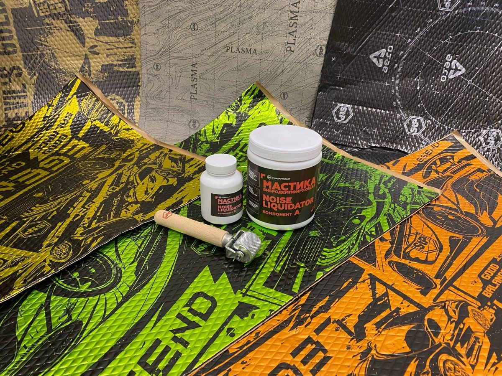
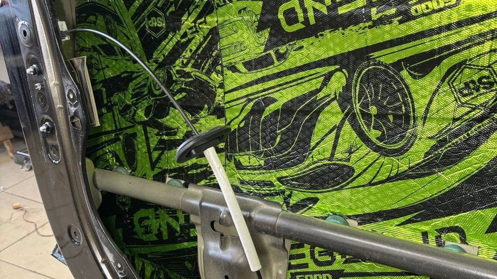
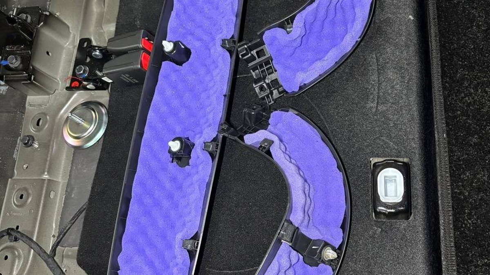

Суббота, гараж в Заволжье, на улице плюс два и мокрый снег. Обшивка двери лежит на коврике, рядом рулон материала, фен и коробка, в которую вы складываете пистоны. К вечеру пистонов в коробке меньше, чем было дырок. Пара треснула, ещё один улетел под машину. Дверь вы всё равно собираете: держится же. А через неделю, на первом утреннем минусе, она начинает тихо поскрипывать на каждой кочке.
Это самая частая история с самостоятельной шумкой. Не то чтобы руки кривые. Просто снять и поставить обшивку правильно – отдельная работа, и о ней в роликах говорят меньше всего.

Шумоизоляция – это не один материал, а несколько слоёв с разной задачей. Вибропоглотитель гасит дребезг металла. Мягкие шумопоглощающие материалы забирают звук в полостях. Противоскрипные ленты убирают стук и скрип пластика о пластик и о металл. Когда всё это клеят по принципу «чем больше, тем лучше», машина становится тяжелее, а тише ненамного.
Вторая ловушка – холод. Вибропоглотитель на битумной основе нужно прогревать и плотно прикатывать валиком. В холодном гараже он ложится на металл, но держится плохо: где-то остаётся воздух, где-то материал потом отходит пузырём. Через месяц внутри двери что-то шуршит, и вы не понимаете, что именно.
Третья ловушка – дверь изнутри не сухая. По ней стекает вода с бокового стекла, и для этого внизу есть дренажные отверстия. Заклеили их или положили во влажную зону материал, который впитывает воду, – получили сырость там, где её быть не должно. Зимой с реагентами это вдвойне неприятно.
Скрип после самодельной шумки почти никогда не идёт от самого материала. Он идёт от сборки. Сломанные клипсы, которые вы решили не менять. Обшивка, которая теперь садится туже, потому что слой под ней толще. Жгут проводов, который раньше был притянут к кузову, а теперь болтается между двумя слоями. Тросик замка, задевающий новый материал.
Летом пластик мягче и многое прощает. В мороз он твердеет, зазоры меняются, и всё, что держалось на честном слове, начинает себя выдавать. Отсюда ощущение, что «шумка испортила машину», хотя виновата не она, а то, как машину собрали обратно.

Если решили делать своими руками, начните с вопроса не «какую шумоизоляцию купить», а «что меня раздражает». Гул снизу на трассе, грохот в арках на щебёнке, дребезг двери от музыки – это разные задачи, и материалы под них разные. Купить набор «на всю машину» и обклеить им всё подряд – самый дорогой и самый бесполезный путь.
Возьмите заранее новые пистоны и клипсы под вашу модель. Работайте в тёплом помещении. Фотографируйте каждый разъём и каждый жгут до того, как его отсоединить. Не трогайте разъёмы подушек безопасности, если не знаете, как с ними обращаться. И не закрывайте ничего, что задумано открытым: дренаж, технологические отверстия, ход тяг и тросиков.
Не разбирайте всё сразу. Сначала найдите место: пусть кто-то ведёт машину по неровному двору, а вы слушаете и прижимаете рукой обшивку в разных точках. Скрип пропал под ладонью – вы нашли его. Чаще всего дело в одной-двух клипсах или в незакреплённом жгуте, и чинится это за один подход.
Если шум ушёл куда-то глубже, внутрь двери или под торпеду, тут уже нужна разборка и опыт. Можно, конечно, снова провести выходные в гараже. А можно отдать тем, кто разбирает такие обшивки каждый день и знает, где у вашей модели слабые места.
Запишите, где и когда шумит: на какой скорости, на холодную или на прогретую, на ровной дороге или на кочках. С таким списком любой мастер найдёт причину быстрее, а вы не заплатите за поиск вслепую.
Мы в Ярославле – студия «Автостиль», проспект Октября, 82б. Монтаж идёт вне зоны видимости клиента, поэтому мы делаем фотоотчёт каждого этапа и каждого слоя материала: вы видите, что лежит у вас под обшивкой. Подробнее – на странице про шумоизоляцию. Стоимость посчитаем по вашей машине: +7 902 220-75-55.